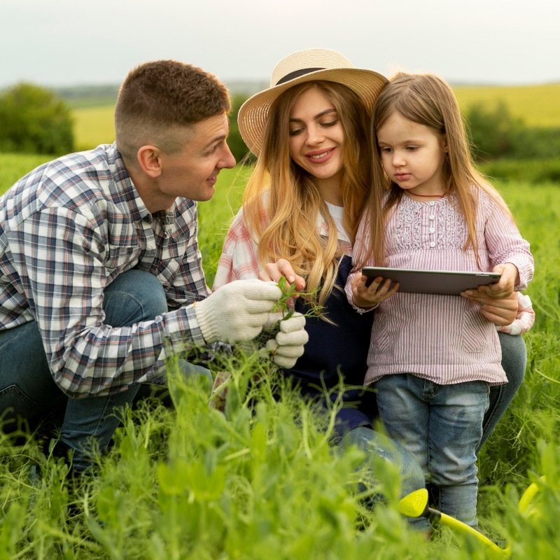

Como os jovens foram beneficiados pelo crescimento tecnológico recente?
 Image by freepikOs avanços tecnológicos na agricultura oferecem diversos benefícios para os jovens, contribuindo para tornar o setor mais atraente e acessível.
Aumento da Produtividade:
Com o uso de tecnologias como drones, sensores de solo, sistemas de irrigação automatizados e maquinário moderno, os jovens agricultores podem aumentar a produtividade das suas colheitas, resultando em maiores rendimentos e eficiência.
Redução do Trabalho Manual:
Tecnologias como tratores automatizados e robótica agrícola reduzem a necessidade de trabalho manual pesado, tornando a agricultura uma carreira mais viável e menos exaustiva fisicamente para os jovens.
Gestão Precisa:
Sistemas de gerenciamento de fazendas baseados em dados e análises ajudam os jovens a tomar decisões mais informadas sobre plantio, irrigação, uso de fertilizantes e controle de pragas, melhorando a eficiência e sustentabilidade das operações agrícolas.
Acesso a Informações e Educação:
A internet e as plataformas de aprendizado online oferecem aos jovens agricultores acesso a uma vasta quantidade de informações e recursos educativos, permitindo-lhes aprender novas técnicas e práticas agrícolas modernas.
Sustentabilidade:
Tecnologias de agricultura de precisão e métodos inovadores, como a agricultura vertical e hidropônica, promovem práticas agrícolas mais sustentáveis, que são atrativas para os jovens preocupados com o meio ambiente e a sustentabilidade a longo prazo.
Empreendedorismo e Inovação:
As tecnologias agrícolas abrem portas para o empreendedorismo, permitindo que jovens desenvolvam novas soluções, serviços e produtos para o mercado agrícola. Startups agrícolas estão emergindo em áreas como agrotecnologia, biotecnologia e agricultura digital.
Melhoria da Qualidade de Vida:
A redução do trabalho físico intenso e a automação de tarefas rotineiras melhoram a qualidade de vida dos jovens agricultores, permitindo-lhes equilibrar melhor o trabalho com outros aspectos da vida.
Conexão e Colaboração:
As redes sociais e plataformas de colaboração online permitem que os jovens agricultores se conectem com outros profissionais do setor, compartilhem experiências, aprendam uns com os outros e colaborem em projetos inovadores.
Acesso a Mercados:
Tecnologias de comércio eletrônico e plataformas de venda direta ao consumidor permitem que os jovens agricultores alcancem mercados mais amplos e diversificados, aumentando suas oportunidades de venda e receita.
Esses benefícios mostram como a tecnologia pode transformar a agricultura em uma profissão moderna, eficiente e sustentável, atraindo uma nova geração de jovens inovadores e empreendedores para o setor.